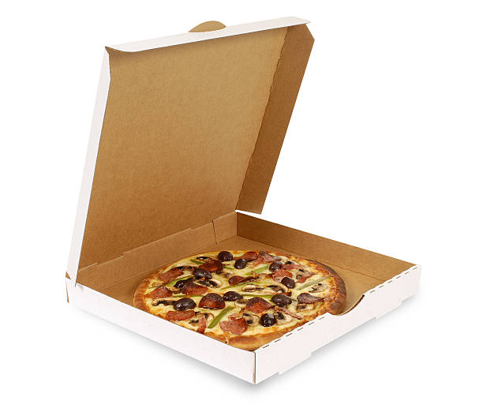

Beep! Beep! beep! The uber app has a unique alert which tells the driver that someone made a request. The request could be a ride or a food delivery; either way it’s always the same thing!
It’s totally up to the driver to accept or decline the request; each choice has consequences. On one hand if the driver were to ignore the request the uber organization may punish the driver by
lowering the drivers scores (…more on this later). If the driver accepts the trip, then the driver becomes responsible for someone else’s well-being be it a destination trip or a food delivery request. Food deliveries
are usually very easy; It can get messy if the delivery is to an apartment complex. I remember one time I had to abandon a food delivery because even the customer was unsure about his
whereabouts in the maze of buildings. I remember that situation vividly. It was an order I picked up just as the night fell. It was a rainy evening; not heavy rain just a constant annoying
drizzle. I picked up the food at the restaurant; it was a small pizza. This order was actually the 2nd of 2 order orders. Time is crucial when you have 2 orders to deliver
sequence is not in the same order in which it was received. The pizza order came first as that address was the closest to my current location. I arrived at the drop-off address.
It was the dreaded apartment complex. The supplementary note indicated apartment #58. The apartment complex is a sprawling multibuilding leviathan the #58 meant nothing to me. To make long story short,
after going back and forth with the customer via text messages and running around on foot in the rain I finally gave up. I sent a final text to the customer “sorry I cannot find you.
Please contact uber support!”. As you can imaging the returning text messages came in fast and furious from the customer. I ignored them all and canceled the delivery halting the incoming messages.
As I drove away, I became uneasy. I was unsure how uber would react to the complaint that was undoubtedly going to come from the customer I abandoned. “Whatever will be will be” I thought to myself.
I had one more customer to render delivery service too and that became my primary focus now. This order was seafood alfredo and nobody likes cold alfredo. The first delivery delayed the second substantially.
If I was the second customer, I would be very upset. I pondered the consequences. Till this day I am still not sure which is scarier getting fired by uber or not getting a tip?
I made the second delivery without a hitch. I did not wait around to see the look on the customers face I just assumed the worst. Now, there is still the matter of that 10” pizza getting cold on my back seat!
THE END !!
